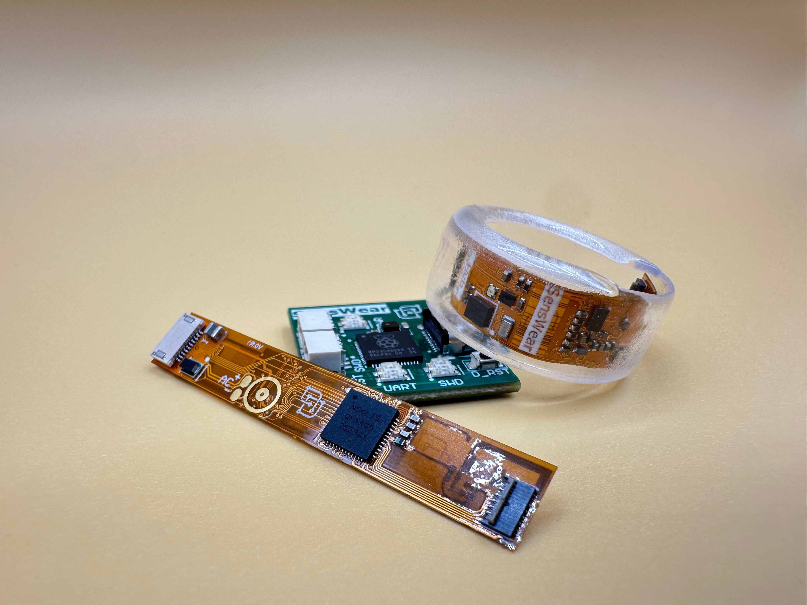
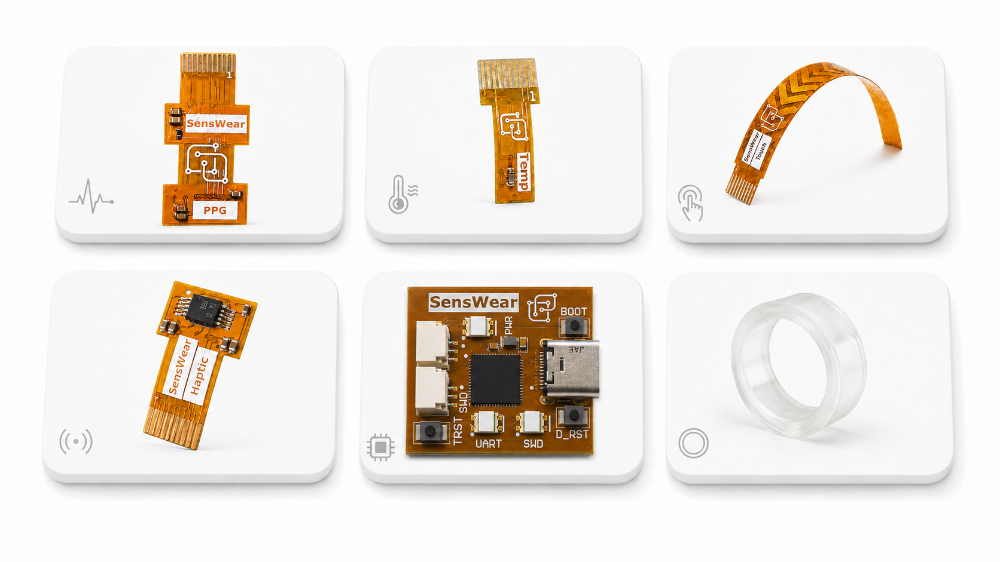
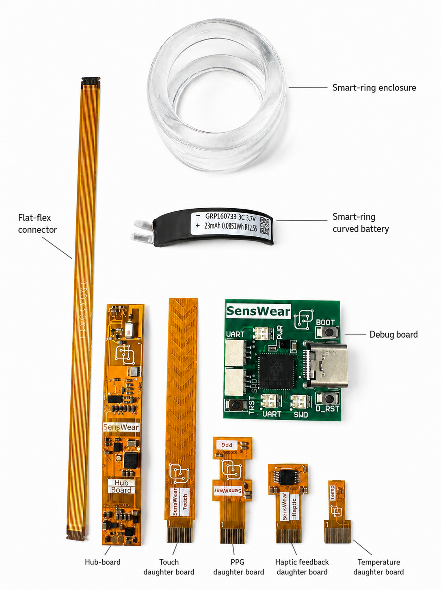
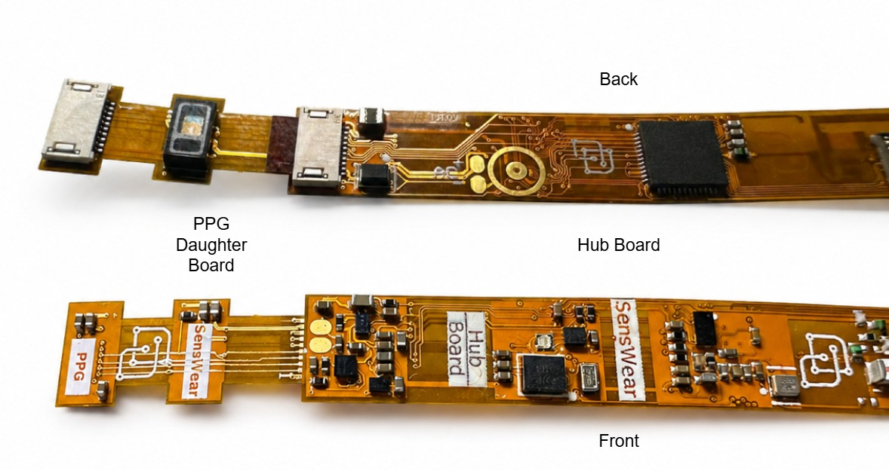
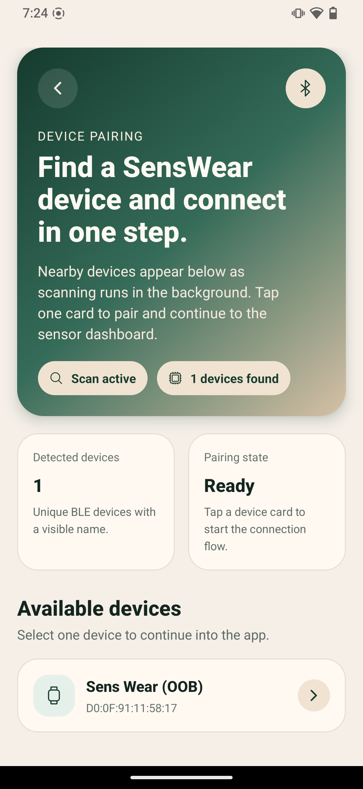
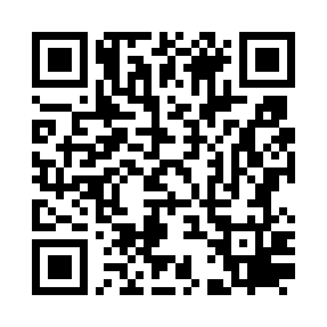
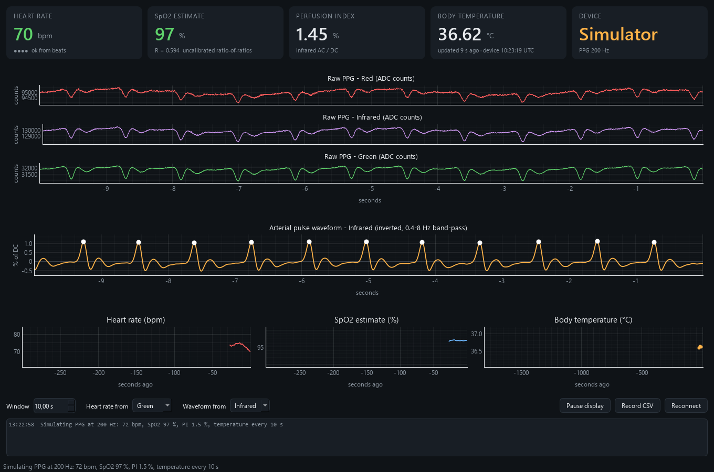

SensWear
THINKIN’ ROCKS × SENSWEAR
Let’s build
a wearable
A look inside SensWear,
then a kit in your hands.
Dariush SalamiAalto Design Factory · Espoo
SENSWEAR × THINKIN’ ROCKS
Before the first signal, there’s a lot to build.
A custom wearable, from a blank PCB to PPG and temperature in a CSV.
Electronics & PCB design240 h€19.2k
Firmware & Bluetooth240 h€19.2k
Client integration & testing120 h€9.6k
Enclosure & fit80 h€6.4k
System checks & rework120 h€9.6k
3 prototype builds + enclosure parts€6k
ILLUSTRATIVE FIRST PROTOTYPE€70k800 engineering hours
12working weeks
with a small team
Design → build → test → repeat Skip the rebuild. Start with SensWear.
Same first-recording milestone. A compatible kit already in your hands.
PROTOTYPE BUDGETFrom scratch€70k
SensWear€1.8–2.8k
≈25–39× lower modelled cost
TIME TO PROTOTYPE · TTPFrom scratch12 weeks
SensWear2 days
≈30× faster in this scenario
Earlier prototype→Earlier feedback→Shorter path to market TTM
Start with a ring. Change the shape.

EnclosureCore electronics + batterySensor modules
Choose the signals. Keep the platform.
PPGRaw red, infrared and green light signals
Body temperatureLocal sensor readings at the skin
More when you need itMotion, touch, light and vibration

Use the layer you need. Change the rest.
One open stack, from a sensor board to your own application.
CloudUNDER CONSTRUCTION
Shared services
→Teams running studies
Applications
Web app · React Native app
→People who want to capture data
SDKs
Python · TypeScript / React Native · Web Bluetooth
→Developers building tools
Firmware
Sensor drivers · timing · BLE
→Embedded developers
Hardware
Main board · sensor modules · design files
→Hardware builders & researchers
Open under the MIT licenseHardware designs · firmware · SDKs · applications
Who’s building it
Dariush Salami
Co-founder & CEO
Wearable sensing and AI
Hüseyin Yiğitler
Co-founder & CTO
Embedded hardware and wireless
Behzad Salami
Co-founder & CRO
Computing systems and research
AI took off when the foundations came together.
HardwarePowerful, accessible compute
WEARABLES STILL FACEClosed devices; costly prototyping
WHAT OPEN WEARABLES ENABLEOpen, modular hardware
Open scienceMethods and code others can build on
WEARABLES STILL FACEFragmented tools and methods
WHAT OPEN WEARABLES ENABLEInspectable code and experiments
DataLarge datasets to train and test on
WEARABLES STILL FACERaw data is hard to access and reuse
WHAT OPEN WEARABLES ENABLERaw signals for reusable datasets
SensWear helps build those foundations for wearable AI.
Here’s the bet
5–10 years
Hardware design starts to feel
more like software development.
You describe what you want.
ChatGPT or Claude helps design it.
“Design a wearable around these signals.”
YouPPG, skin temperature, a small battery,
and raw data over Bluetooth.
01AI assistant
ChatGPT / Claude
→02Design draft
Electronics + firmware
→03Prototype
Build, measure, revise
Engineering review and testing stay in the loop.
What does the AI build on?
SensWearA foundation the AI can inspect and reuse
Known hardware
Schematics and modules
Clear interfaces
Firmware and SDKs
Working examples
Code, constraints and tests
A new wearable starts with parts that already work together.
We want SensWear to be the starting point
Open SensWear
foundation
→People and AI
build on it
More projects
More examples others can reuse
More demanding products
Teams need deeper capabilities
That’s the opportunity we’re betting on.
Where customers could pay
Optimized
wearable chip
Lower power.
Smaller footprint.
Tighter integration.
Continuous blood-pressure estimation
Specialist algorithms
and validation work.
PPG front-end
optimization
AFE configuration tuned
to the sensor, placement
and application.
Free, open SensWear foundationHardware designs, core firmware, SDKs and apps
How we get there
NOWA working
open platform
Hardware, firmware,
apps and SDKs
NEXTEasier to
build on
More kits, better examples,
clear design constraints
LONGER TERMSpecialist
technology
Enterprise silicon,
algorithms and tooling
First, let’s get more kits out there
Let’s turn the kit into a recording.
Main boardProcessing, power and Bluetooth
Debug board + USBPower for this workshop setup
PPG + temperatureOptical and contact-temperature sensing

Main board, debug board, USB
- 01
Power off first
Fit the cable before connecting USB.
- 02
Match the connector orientation
Seat the flex evenly. Ask if it doesn’t feel right.
- 03
Connect USB
Check the power indicator.
Fit the sensors before powering up.
- 01
Power off
Fit the daughter board with the kit unpowered.
- 02
Check the orientation
Use the matching connector. Seat it gently.
- 03
Leave the sensors accessible
We need steady contact for PPG and temperature.

Four ways to get a signal.
ANDROID PHONESensWear app
Connect, view PPG or temperature, share CSV.
Android setup ↗YOUR OWN CODEPython SDK
Capture raw PPG and temperature together.
Python setup ↗SUPPORTED CHROMIUMWeb app
Open a sensor view. Record and export CSV.
Browser setup ↗BUILT FOR THIS EVENTHeart-rate demo
Live PPG + temperature, with HR and SpO₂ estimates.
senswear-heartrate 0.1.0 ↗ EVENT DEMO · PYTHON 3.10+python -m pip install "senswear-heartrate[gui]==0.1.0"
python -m senswear_heartrate
Android: scan, connect, share
- 01
Install SensWear
Scan the QR code for Google Play.
- 02
Connect your kit
Enable Bluetooth and allow Nearby devices.
- 03
Open PPG or Temperature
Tap Share CSV before leaving that sensor screen.


SensWear on Google PlayPython: record both raw signals.
python -m pip install -r examples/requirements.txt
python examples/record.py --scan
python examples/record.py --address "DEVICE_ID" --label rest --sync-clock
OPTICALppg.csvRed · infrared · green
TEMPERATUREtemperature.csvSensor temperature · °C
CONTEXTmanifest.jsonDevice · label · timing
Browser: app.sens-wear.com
- 01
Connect device
Choose your assigned kit in the Bluetooth chooser.
- 02
Open PPG or Temperature
Temperature: Interval in seconds → 60,
then Apply interval.
- 03
Start a clean clip
Pause → Clear recording → Resume.
Then Pause → Export CSV.
Raw signals first. Estimates second.
- 01
Make steady contact
Cover the optical sensor; let temperature settle.
- 02
Record a steady clip
Toggle Record CSV. Watch PPG and temperature, then stop recording.
- 03
Change the contact
Record a second clip. What changes in the waveform and estimates?

senswear-heartrate · simulated demo signalsPPG waveform→Signal processing→Heart rate + SpO₂ estimates
REFERENCE
Something not working?
| Symptom | First check |
|---|
| Device missing from scan | Power, Bluetooth permissions and the assigned device ID |
| Connection fails | Disconnect other phones, browser tabs and Python sessions |
| Connected, but no data | Correct sensor view, fitted module and matching firmware |
| PPG is flat or irregular | Contact, motion and ambient light; let the signal settle |
| Temperature moves slowly | Sensor contact and thermal settling; this is local temperature |
| No kit / estimates unavailable | Share a working kit, or run the event demo with --simulate |
REFERENCE
Developer client support
| Client | Environment | Use it for |
|---|
| Python SDK | Desktop Python with BLE | Scripts, notebooks and raw capture |
| TypeScript SDK | React Native · Android / iOS | Native mobile BLE integration |
| Web Bluetooth SDK | Supported Chromium environments | Browser BLE with user-granted access |
| Mobile app | Native app build | Live sensor views and CSV sharing |
| Web app | app.sens-wear.com | Live views, CSV export and simulated demo |
| senswear-heartrate 0.1.0 | Desktop Python + GUI extra | PPG, temperature, HR and SpO₂ estimates |
REFERENCE
Know what each value means.
| Signal / result | Values | Timing / interpretation |
|---|
| Raw PPG | Red / IR / green · ADC counts | Device timestamp_ms; verify delivered cadence |
| Temperature | Sensor temperature · °C | Optional device datetime; separate host arrival time |
| Heart rate | Estimate · beats/minute | Calculated from the PPG waveform |
| SpO₂ | Estimate · % | Red/IR model; needs calibration and validation |
REFERENCE
Inside the Python recording loop
async with SenswearClient(DEVICE_ID) as device:
await device.ppg.subscribe_red(on_red)
await device.ppg.subscribe_ir(on_ir)
await device.ppg.subscribe_green(on_green)
await device.temperature.subscribe(on_temperature)
await device.temperature.set_measurement_interval(60)
await device.ppg.set_sampling_enabled(False)
await device.ppg.set_sampling_enabled(True)
await asyncio.sleep(75)
Callbacks save samples.The complete recorder adds CSV files, metadata and cleanup.
REFERENCE
Keep building.